Introduction
OMERO.mtools is a suite of MATLAB-based tools which allow you to perform common image analysis tasks on images stored in an OMERO.server. OMERO.mtools has its own GUI and only requires an installation of the MATLAB Compiler Runtime (MCR) to run.
A link to a video of a demonstration of the workflows can be found in the Other resources section at the bottom of the page.
Setup
Download the appropriate OMERO.mtools for your operating system from:
http://downloads.openmicroscopy.org/mtools/1.2.0/
If you are using Windows, it is recommended to also download the MCR for Windows.
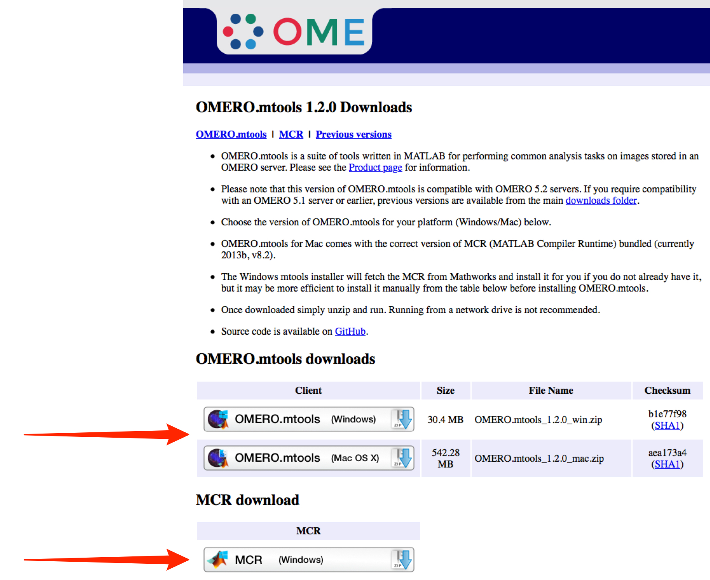
Install OMERO.mtools and MCR if you do not have a Matlab installation.
Windows:
It is recommended that you download the MCR from the downloads page above, and install it before running the OMERO.mtools installer to speed up the installation.
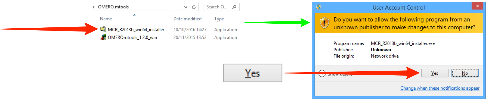
Note
The OMERO.mtools installer will automatically download the Matlab Compiler Runtime (MCR) from Mathworks and install it, but slow server speeds makes this painful, hence the recommendation to install it separately first.
Unzip the OMERO.mtools download and double-click on it, and follow the prompts to install.
Click Login.
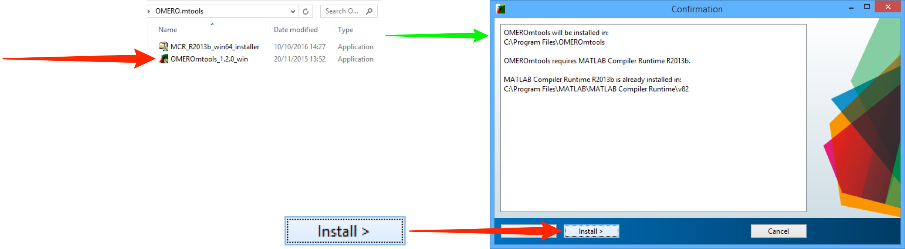

Mac OSX:
Unzip the OMERO.mtools download and double-click on it, and follow the prompts to install.
On Mac OS X, the MCR is bundled with OMERO.mtools, so no separate installation is needed.
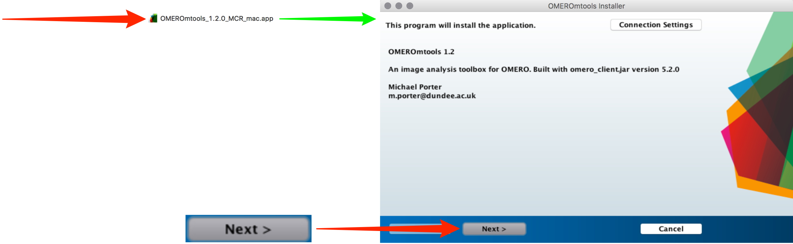
In Windows click on the Start button and select All Programmes > OMEROmtools.
In Mac in the Applications folder double click on OMEROmtools > application > OMEROmtools.app.
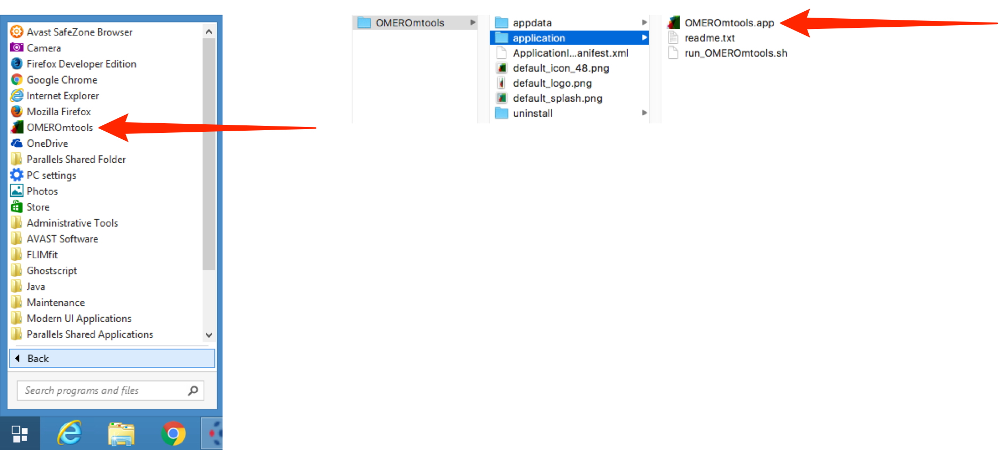
Enter your OMERO User name, Password and Server name.
Click on the appropriate button to select the desired function.
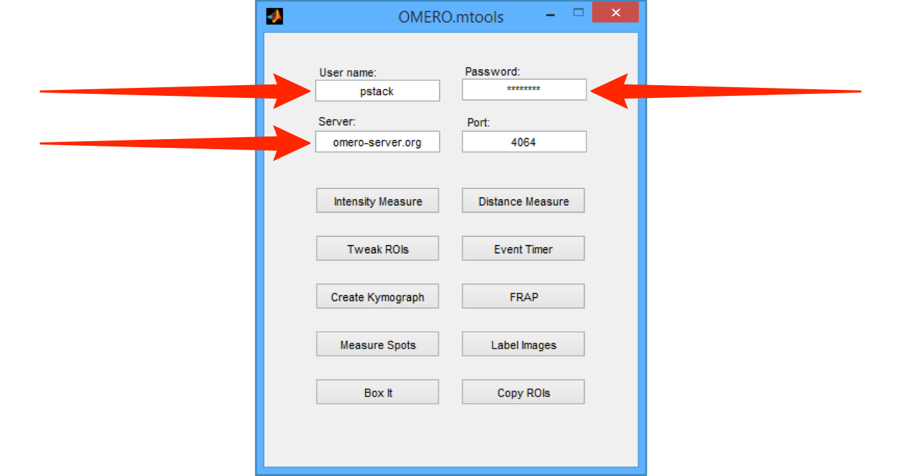
Following are illustrations of two of the functionalities covered by OMERO.mtools.
Note
Images have to be organized in the Project-Dataset hierarchy to be accessed via OMERO.mtools. Datasets not in a Project or orphaned Images cannot be accessed via OMERO.mtools.
Box It
Box It draws ROIs around structures through all of the planes in the Z-stack for use in subsequent analysis.
Click on the Box It button to start.
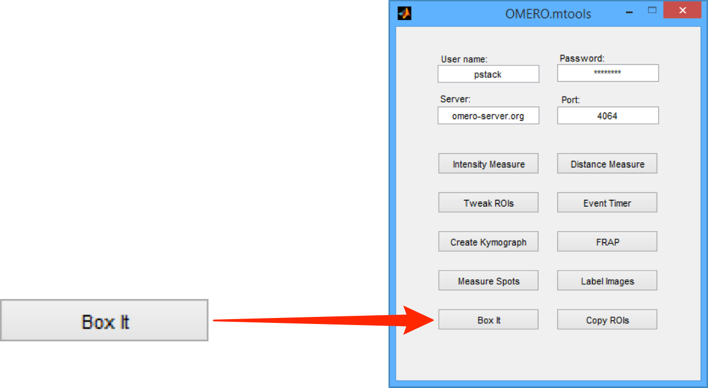
Select the OMERO group you wish to access data from.
Click OK.
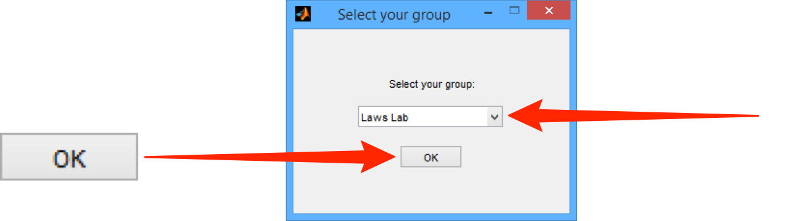
Select Open Image... from the File menu.

From the drop-down menus in the Image Chooser, select the project, dataset and image you wish to open.
Click OK.
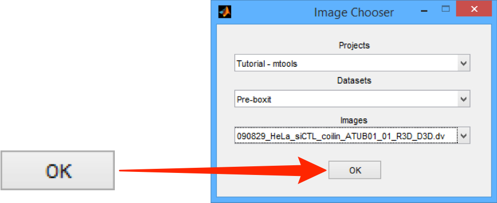
Click on the ROI drawing tool to draw an ROI around a structure.
The first ROI drawn triggers the download of the data, which may take a minute or two.
The dotted line should be drawn generously round the structure as it will resize automatically to minimally fit the structure.
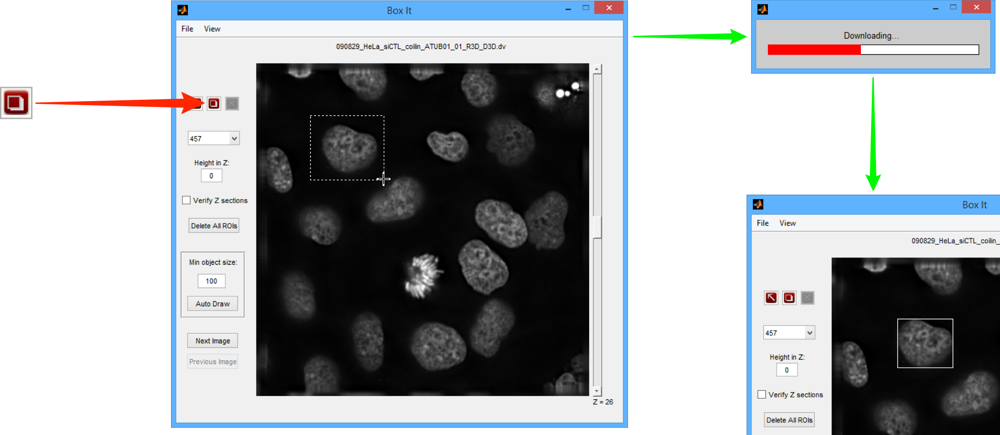
Click on the Selection tool to select an ROI, the selected ROI is green.
If necessary, an ROI can be deleted by selecting it and clicking the Delete button.
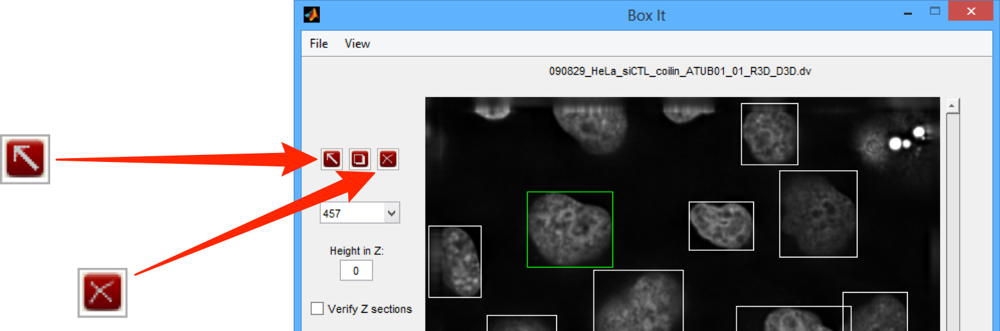
Select File > Save ROIs to save the ROIs to the OMERO server.
Use the Next Image and Previous Image buttons to move to the other images in the dataset and repeat Step 5 to draw ROIs on other images in the Dataset.
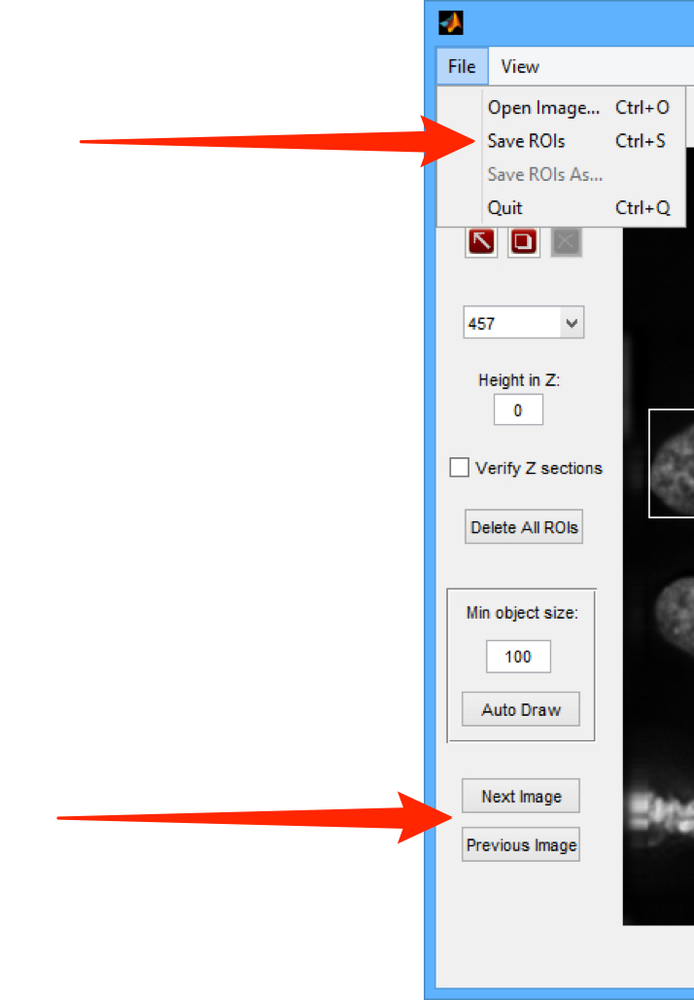
Intensity Measure
Intensity Measure can be used to measure the signal from objects identified within ROIs, as well as background intensities around these objects. ROIs can be drawn using Box It or any other OMERO method.
Click on the Intensity Measure button to start.
http://downloads.openmicroscopy.org/latest/omero5
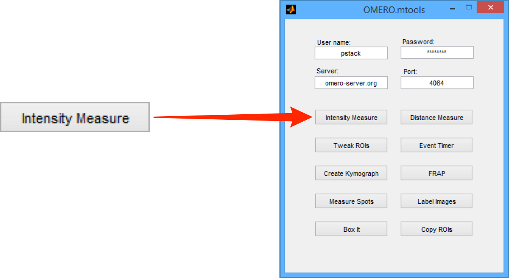
Select the OMERO group you wish to access data from.
Click OK.
From the File menu select the Choose Datasets.
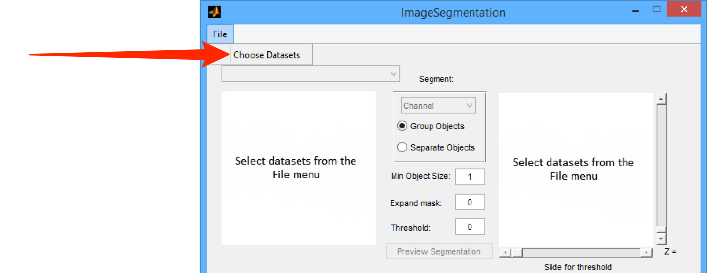
Select the Project containing the data from the Projects drop-down menu.
Select the required Datasets from the Datasets list box.
Click on the + button between the list boxes to add the required dataset.
Click OK.
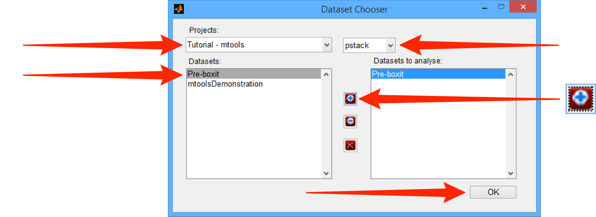
Select the Image for analysis from the Select Image drop-down menu.
Select the channel to be analysed from the drop-down menu in the Segment section.
Use the slider to change the threshold for segmentation, if needed.
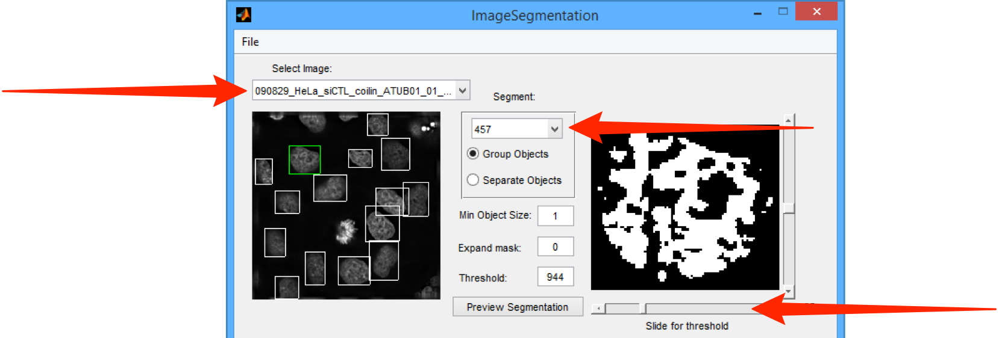
Check the required channels in the Measure directly (measure signal within the ROIs) and Measure around (measure background around the ROIs) checkbox lists.
Check the Use checkbox and enter the number of pixels for the annulus and pixel gap values in the text boxes.
Select the Save mask to server checkbox.
Click OK.
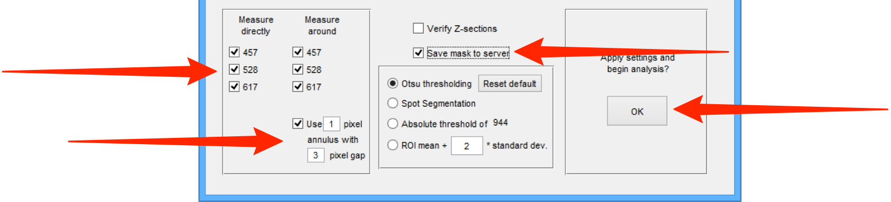
Follow the prompts to save the results as .csv files.
The results include intensity values and related statistics for all the Images within the dataset that contain ROIs.
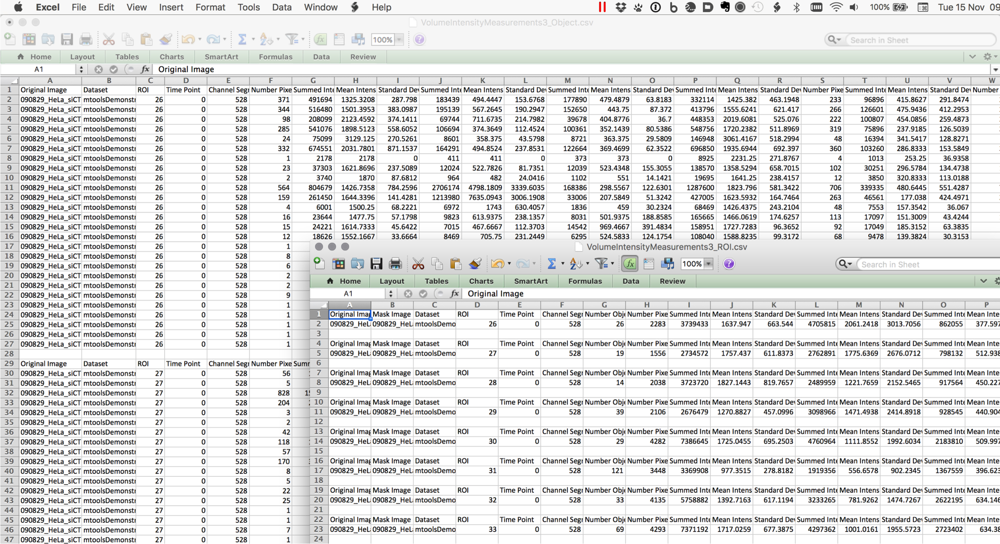
Other resources
A video of this workflow can be seen at:
OMEROmtools.mp4
All Tutorial Material is available on line at: help.openmicroscopy.org
The Main OME website is at: www.openmicroscopy.org